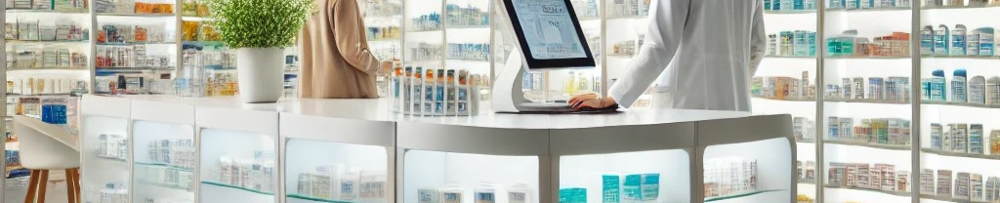

Mis experiencias laborales: un recorrido profesional por la Farmacia y la Biotecnología
A lo largo de mi trayectoria académica y profesional, he tenido la oportunidad de integrar mis conocimientos en Farmacia y Biotecnología, dos disciplinas que han sido fundamentales en mi desarrollo y que me han permitido adquirir competencias clave en investigación, práctica farmacéutica y trabajo en laboratorio. Estas experiencias han sido el eje central de mi formación y desarrollo profesional.
"El conocimiento es un tesoro, pero la práctica es la clave para lograrlo."
— Lao Tsé
Farmacia: una base sólida para la atención al paciente y la gestión
Durante mis prácticas en la Farmacia Gema Pérez Sánchez, tuve la oportunidad de adquirir una experiencia integral en la atención farmacéutica. Mis responsabilidades incluyeron la dispensación de medicamentos, la monitorización terapéutica y la preparación de sistemas personalizados de dosificación, así como la gestión de inventarios y el control de la caducidad de los productos.
Esta experiencia me permitió desarrollar competencias clave en la comunicación con los pacientes, ayudándoles a comprender sus tratamientos y mejorando su adherencia terapéutica. Además, fortalecí mis habilidades organizativas y mi capacidad para trabajar bajo presión en un entorno clínico dinámico.

Experiencia en el laboratorio: investigación
Mi rol como alumna colaboradora en el grupo de Inmunología de la Universidad CEU San Pablo ha sido uno de los más enriquecedores de mi trayectoria. En este contexto, he trabajado con líneas celulares como Vero, RAW, Leishmania sp etc., adquiriendo experiencia en técnicas de cultivo celular, criopreservación y recuperación de células, así como en el análisis de la toxicidad de medicamentos en diferentes modelos celulares.
Esta experiencia me ha permitido aplicar metodologías avanzadas para evaluar los efectos de compuestos tanto naturales como sintéticos, contribuyendo al desarrollo de terapias más eficaces. Además, he fortalecido mis competencias en la gestión de proyectos experimentales, el análisis crítico de datos y el trabajo en equipo dentro de un entorno multidisciplinario.
Mi experiencia como embajador digital: liderando la transformación académica
Como embajador digital en el programa Embajadores Digitales CEU, he tenido la oportunidad de contribuir significativamente a la transformación digital de la Universidad CEU San Pablo. Durante mi tiempo en este rol, he organizado diversas actividades enfocadas en la digitalización académica, incluyendo la creación de tutoriales para el uso de plataformas como Blackboard Ultra y la producción de materiales educativos diseñados para facilitar la enseñanza y el aprendizaje en un entorno digital.
También he participado activamente en el diseño y desarrollo de herramientas tecnológicas, como robots para actividades en línea, colaborando con ingenieros y otros equipos interdisciplinarios. Liderar el grupo de enseñanza digital ha sido una experiencia enriquecedora, donde he podido aplicar mis habilidades organizativas y promover el aprendizaje colaborativo tanto a nivel local como internacional.
Esta experiencia ha fortalecido mis competencias técnicas, mi capacidad para gestionar proyectos innovadores y mi habilidad para comunicarme de manera efectiva con diferentes audiencias. Como embajador digital, me siento orgulloso de haber contribuido a impulsar el cambio hacia un entorno académico más moderno y conectado, un logro que me inspira a seguir promoviendo la innovación y el aprendizaje continuo.

Perspectivas futuras: compromiso con la excelencia y la innovación
Mi objetivo es seguir avanzando en el campo de la farmacia clínica y la investigación científica, combinando mis conocimientos en Farmacia y Biotecnología para desarrollar soluciones innovadoras a los retos sanitarios actuales. La experiencia adquirida en el laboratorio y en la oficina de farmacia me ha preparado para contribuir significativamente en ambos campos.
Estas experiencias no solo han definido mi carrera, sino que también han reafirmado mi compromiso con la mejora continua y el impacto positivo en el ámbito de la salud y la investigación.
"La investigación es ver lo que todos los demás han visto, y pensar lo que nadie más ha pensado."
— Albert Einstein